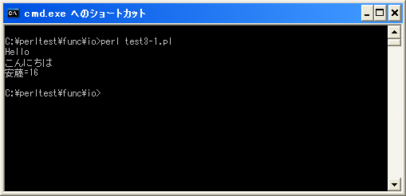
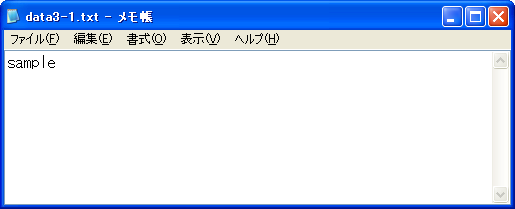

print関数
「print」関数は指定したファイルハンドルに対して文字列を出力します。
print print([FILEHANDLE ]LIST)
ファイルハンドルに対して文字列を出力します。 パラメータ: FILEHANDLE ファイルハンドル LIST 出力する文字列のリスト 戻り値： 成功したら真(true)、失敗したら偽(false)
1番目の引数には文字列を出力する先のファイルハンドルを指定します。省略された場合は標準出力であるSTDOUTが使用されます。ファイルハンドルを指定する場合は開いているファイルハンドルを指定する必要があります。
2番目の引数には出力する文字列を指定します。複数の文字列を出力する場合はカンマ(,)で区切って続けて指定して下さい。
ファイルハンドルと出力文字列の両方を指定する場合には、カンマ(,)では無く空白で区切りますので注意して下さい。
具体的には次のように記述します。
print "テスト";
ファイルハンドルを省略した場合にはファイルハンドルとして標準出力が使用されますので画面に対して出力が行われます。
open(DATA, ">", "filename.txt"); print DATA "テスト"; close(DATA);
「open」関数を使用して書き込みモードでファイルを開き、ファイルハンドルを指定して書き込みを行った場合にはファイルハンドルに関連付けられたファイルに対して出力が行われます。(どのように出力されるのかはモードによります)。
print "テスト", "test", "¥n";
複数の出力文字列を指定する場合にはカンマで区切って続けて記述して下さい。連続して出力されます。
※ファイル操作について詳しくは「ファイル操作」を参照して下さい。
サンプルプログラム
では簡単なプログラムで確認して見ます。
use strict; use warnings; use utf8; use open ":utf8"; binmode STDIN, ':encoding(cp932)'; binmode STDOUT, ':encoding(cp932)'; binmode STDERR, ':encoding(cp932)'; print "Hello¥n"; print STDOUT "こんにちは¥n"; my $name = "安藤"; my $old = 16; print $name, "=", $old, "¥n"; open(DATA, ">", "data3-1.txt"); print DATA "sample"; close(DATA);
上記を「test3-1.pl」の名前で保存します(文字コードはUTF-8です)。そしてコマンドプロンプトを起動し、プログラムを保存したディレクトリに移動してから次のように実行して下さい。

画面に対して出力を行った結果と、ファイルをを新規に作成し書き込みを行っています。新しく「data3-1.txt」ファイルが作成され次のような文字列が書き込まれています。

( Written by Tatsuo Ikura )

著者 / TATSUO IKURA
初心者～中級者の方を対象としたプログラミング方法や開発環境の構築の解説を行うサイトの運営を行っています。